Review of the NASA Hook & Loop Watch Strap by CNS Watch Bands
It is one of the most iconic strap designs ever, originally built for astronauts walking in space. But how does a modern, affordable tribute hold up back on Earth? We took the CNS tribute on a three-month mission of our own to test comfort and durability.
Editor's note: That was a cool lead paragraph. I couldn't resist writing that intro. In reality, the "mission" involved wearing the strap around the house, to work, to the park while playing with the kids, and during other everyday activities 🧑🚀
 Nenad Pantelic • July 03, 2024
Nenad Pantelic • July 03, 2024
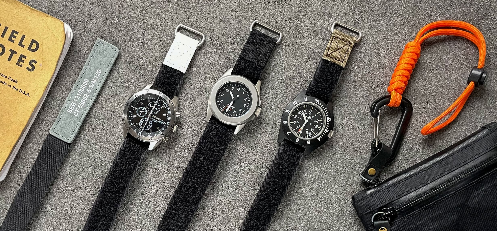
| Quality | |
| Comfort | |
| Design | |
| Durability |
The verdict: CNS has a deep catalog of straps, and sometimes a hidden gem gets lost in the shuffle. This NASA strap is one of those gems - it's seriously good and deserves attention. You won't be disappointed.
What we like?
- Great price
- Almost perfect adjustability
- Does not require break-in time
- Comfort
- Lightweight material
- Versatility and compatibility
What we don't like?
- Strap is a bit short
Full review
Few items in the watch world are as legendary as the Velcro strap that secured the Omega Speedmaster to the wrists of Apollo astronauts. It was pure function. Designed to fit securely over the bulky sleeve of a spacesuit during a spacewalk. That history gives it a special aura, and let us be honest it is one of the coolest strap designs on the planet.
It is nice to see a brand like the CNS create its own tribute to this piece of space history. But is it just for looks, or is it a genuinely great strap? We spent three months with the CNS NASA strap to find out.
Technical details
| Brand | CNS Watch Bands |
| Tapering | None |
| Length | 270mm |
| Material | Nylon + Canvas |
| Construction | Fully stitched |
| Buckle | Stainless steel; Brushed |
| Fastening system | Hook & loop |
| Strap finishing | Matte |
CNS offers this strap in widths of 18mm, 19mm, 20mm, 21mm, or 22mm.
Additionally, the strap is available in over 10 colors. Technically, the straps themselves are all black, and then they stitch on a patch in a different color and material (like suede or canvas).
But wait, there's more! You can also choose a buckle in either brushed stainless steel or black PVD.
It is wonderful to see that CNS actually cares about their customers and is going the extra mile to make sure everyone is happy.
Kudos to CNS for offering such a variety, even in a niche product like these NASA hook & loop straps.
Company and ordering
I can confidently recommend CNS for their dependability and great selection. And I write this as a long-time customer. They have been a staple in the watch strap market for years, and they earned a solid reputation for customer care and product variety.
The buying experience is consistently flawless. Their website operates on Shopify, so you can expect a modern, secure, and hassle-free checkout every time.
I often use Apple Pay for a one-click purchase, but I have also used my credit card without a single problem. My strategy is always to bundle a few straps together to push the total over $35, which instantly saves me 20%. Just be prepared for a bit of a wait on delivery.
Design and Materials
The strap has a very simple but effective design. I think that NASA engineers wanted to create something that astronauts could easily use without fiddling or spending too much time on it.
Basically, it is a strip of nylon with a sewn-in hook-and-loop (Velcro) material. On one side of the strap, there is a metal loop, and on the other, there is a canvas patch with NASA codes printed on it. CNS replicated the original code numbers that were on all mission straps used by astronauts.
The nylon portion of the strap is tough and durable. It is black. The Velcro fastens tightly, and I had no issues with fastening or adjusting it. All elements (the hook-and-loop material, metal parts, and fabric patches) are stitched securely to the strap. The fabric patch is available in either canvas or suede.
The metal loop is signed with the CNS logo and is also available with a black PVD coating. The overall construction and materials used are very good. No complaints here.
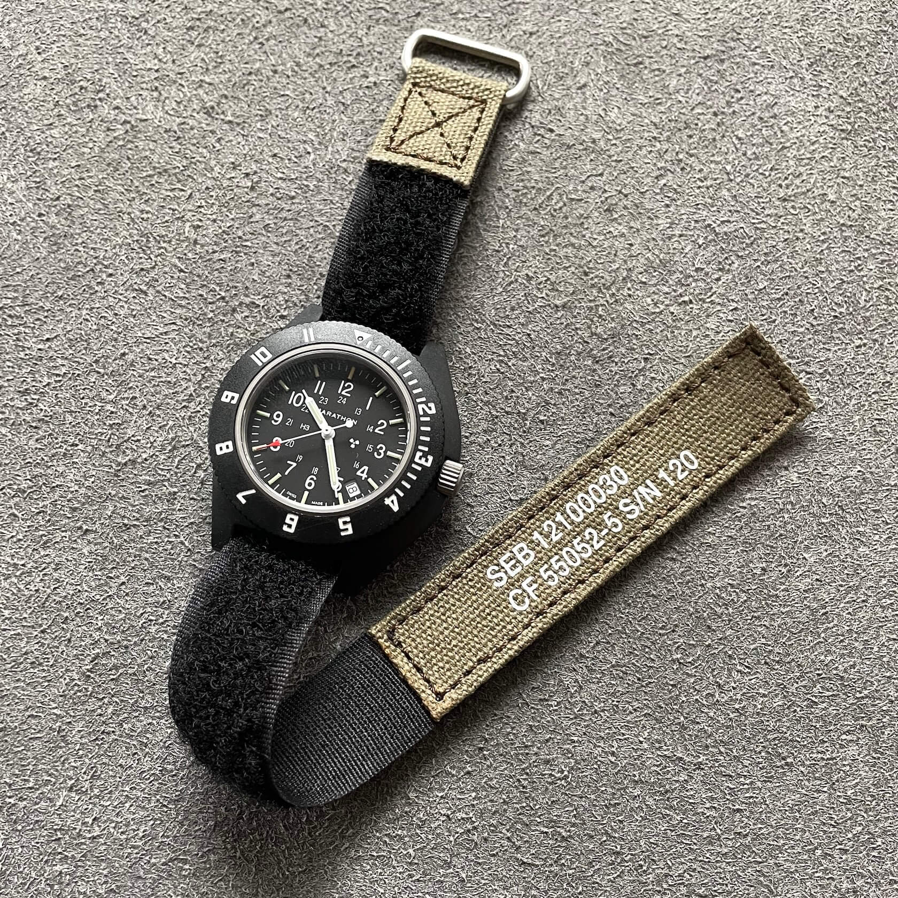
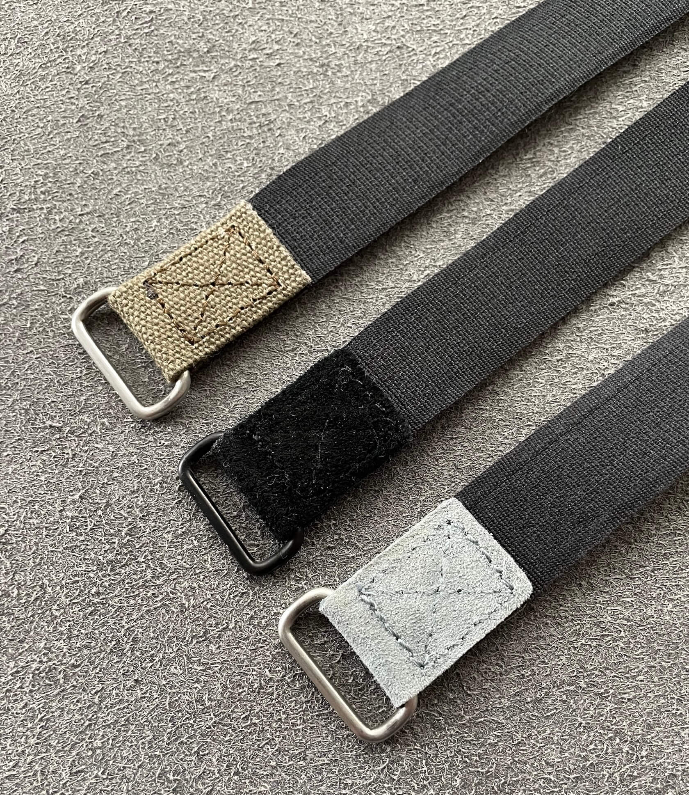
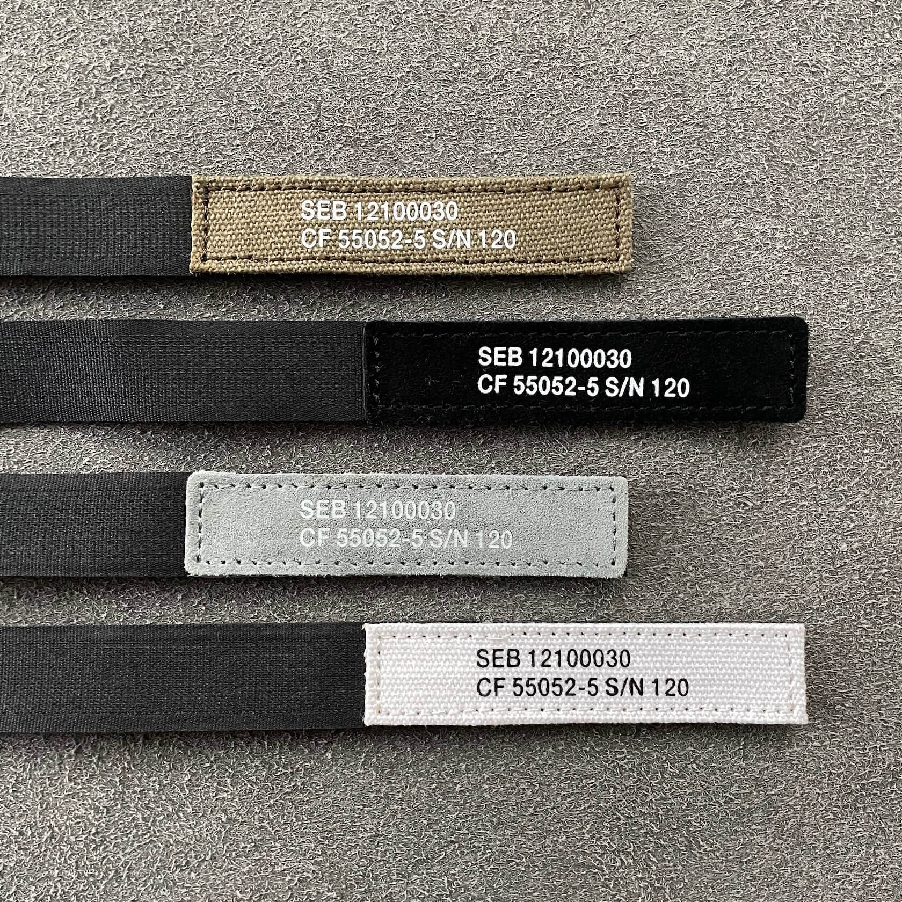
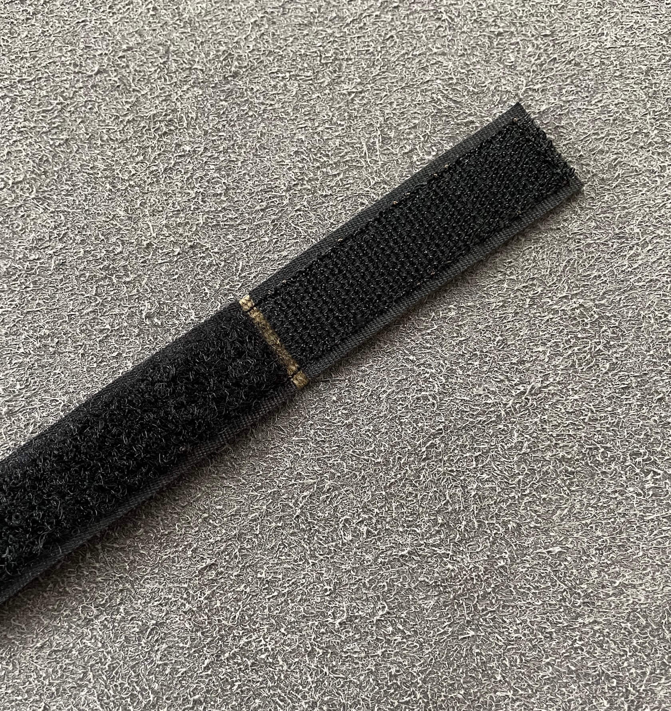
Comfort and Durability
What is the benefit of an infinitely adjustable strap, you ask? It’s comfort, of course. One of the most important aspects of comfort is keeping your watch in one position on your wrist. If your watch is flipping around, changing positions, or if the strap is cinched too tightly, you will feel discomfort. That is not the case with this strap. I was always able to find the perfect fit and adjustment.
One note: since the strap has a pass-through construction, it wraps around your watch's caseback and between the spring bars. This means the strap's effective length depends on the shape of your caseback. For some of my watches, the caseback design used too much of the strap's length, making it a bit short for my wrist.
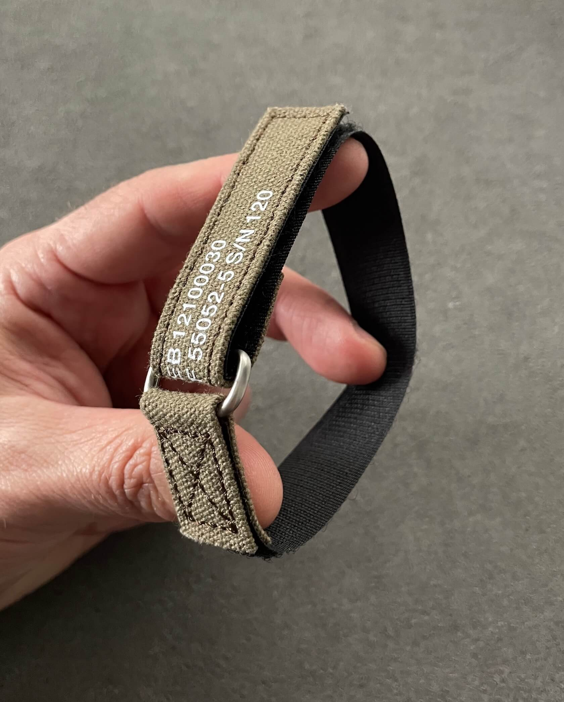
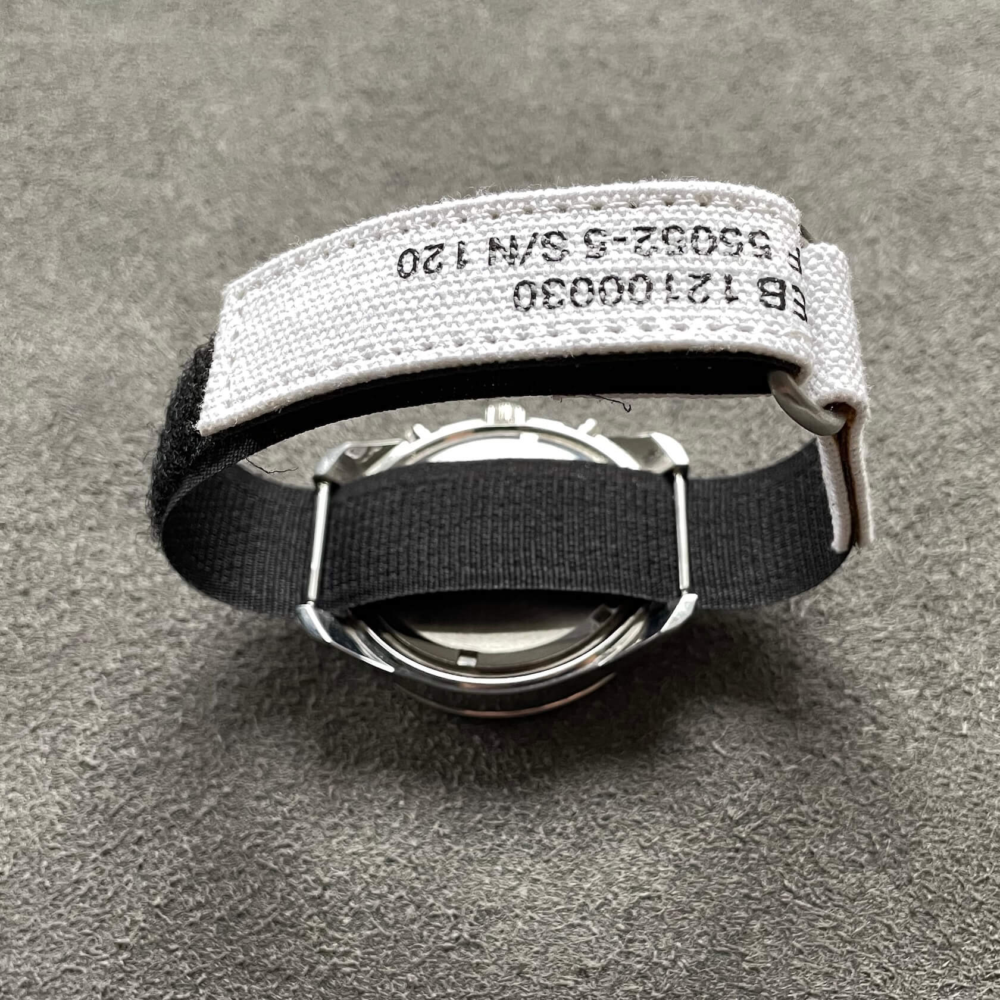
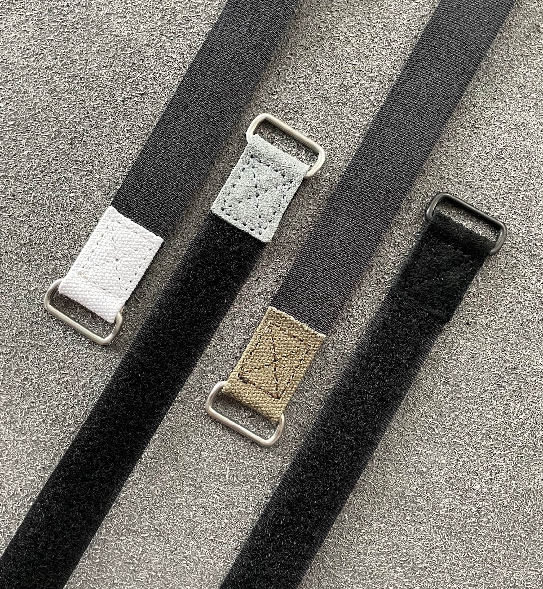
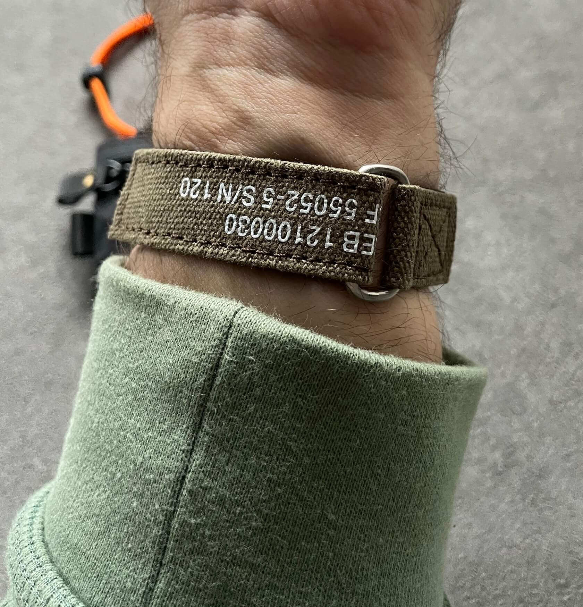
Of course, for watches where the spring bars are on the same plane as the bottom of the caseback, I didn't lose much of the strap's length. The Velcro holds everything tightly together without any issues. As far as durability is concerned, all the straps I have have held up very well. The stitching stayed intact. Overall, it is quite enjoyable to wear the CNS NASA Velcro strap.
Initial Usage Passing the strap through the spring bars is easy. I don't need to remove them. Putting the strap on is also quite easy, and I was able to get the perfect fit with every watch I tried. The CNS NASA strap is comfortable from the get-go.
Two months of use ll the straps have held up very well. I've had no issues, and the stitching is still intact. The codes on the fabric patch haven't faded, and sweat hasn't affected the strap's color. Everything is still in excellent condition.
Compatibility and Pairing Recommendation
The Omega Speedmaster: This is the one. It is the original combination from the Apollo missions, and it just looks perfect.
Done.
Ok, jokes aside, there is more. But let us be clear: this isn't a strap for every watch. It has roots in the space program, and utilitarian spirit so it fits the best with watches that do a job.
It feels right at home on your GADA watches. Think about your dive watch, your field watch, or especially your favorite chronograph. These are the kinds of watches that share the strap's practical DNA.
On the other hand, this isn't the strap for your dress watch. That slim, polished timepiece you wear for formal occasions just won’t feel right with the rugged vibe of Velcro and nylon.
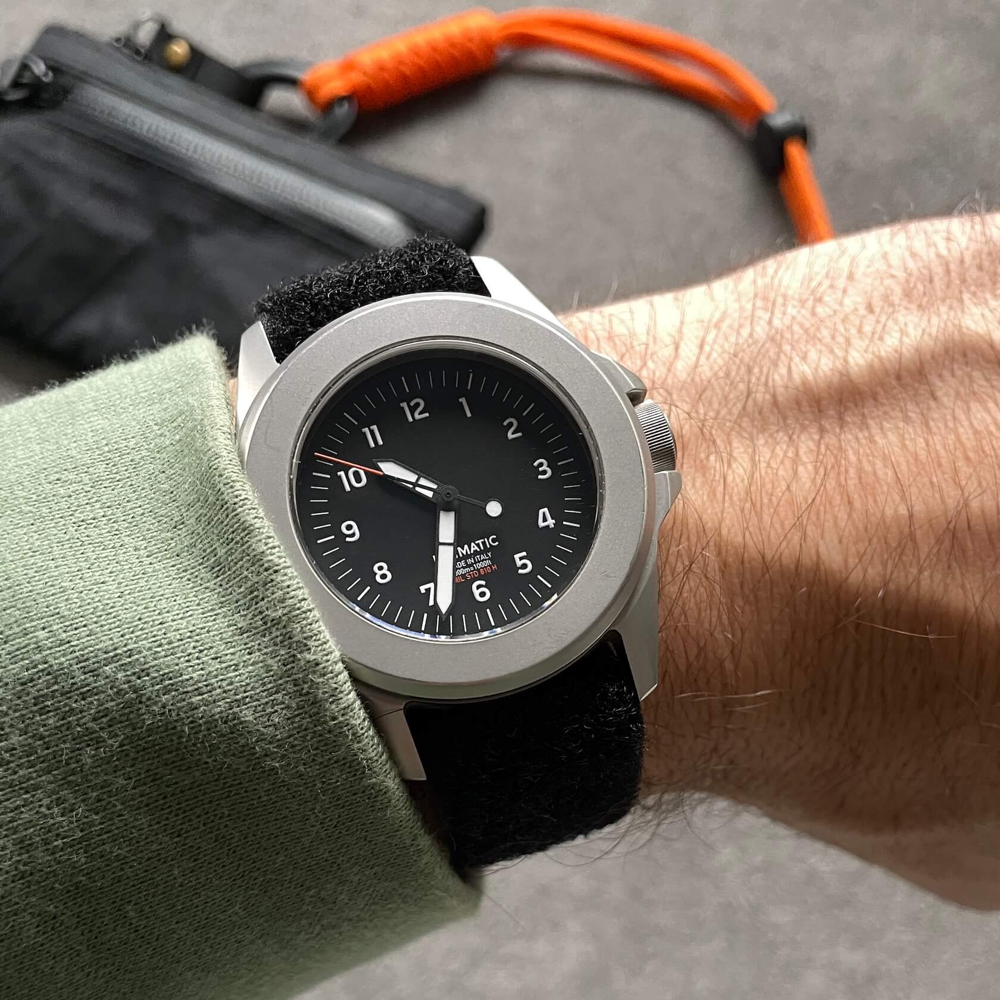
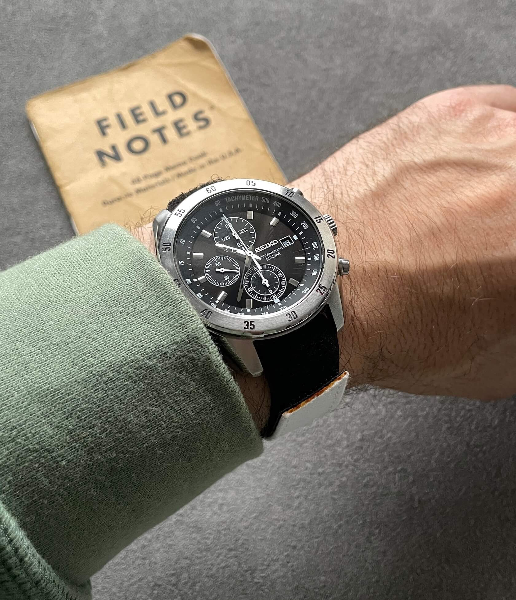
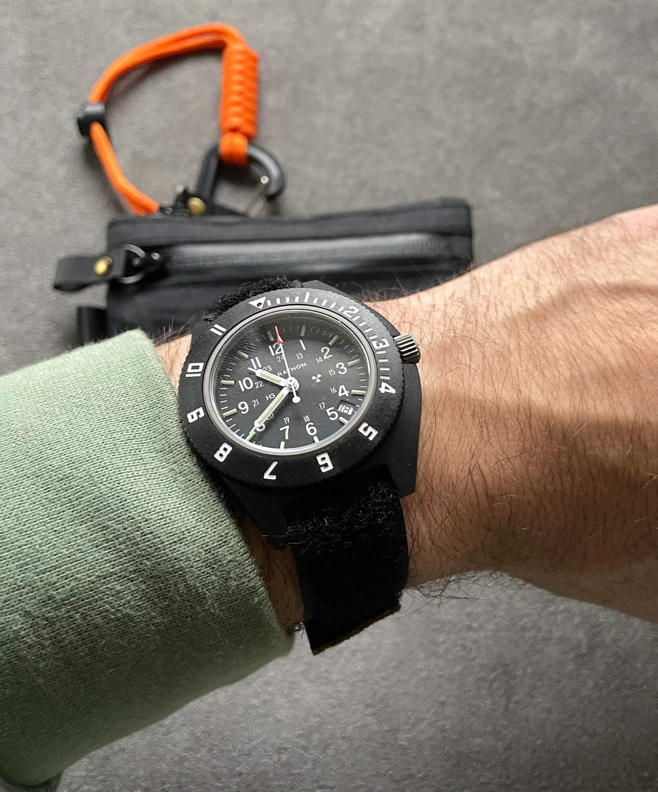
Price and Value
You can buy this strap directly from the CNS website. It is listed under the "Fabric" category in their main menu. The CNS NASA collection has many options, and the prices are quite affordable, especially when compared to other Velcro products on the market.
CNS is the king of value, so these NASA straps are a great deal. They are an even better value when they are on sale, which CNS does frequently.
I highly recommend this strap.
Closing words
I tried to find something wrong with this strap for three months, and I failed. It’s comfortable from day one, it’s tough as nails, and it costs less than lunch. Plus, every time I look down at my wrist, I get to geek out a little about space travel.
If you have a tool watch of any kind, you owe it to yourself to try this one out. It’s the most fun I’ve had with a strap in a long time.